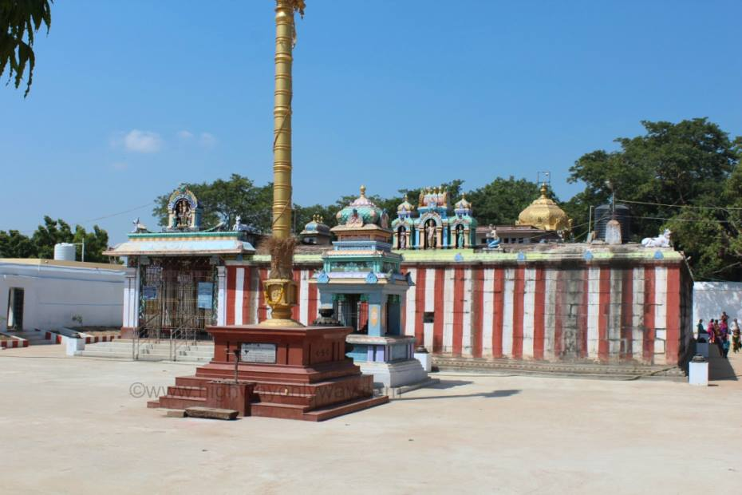

Sri Valli Devasena Sametha Sri Subramanyeswara Swamy Temple

Temple Name: Sri Valli Devasena Sametha Sri Subramanyeswara Swamy Temple
History: The temple was constructed by the Chola rulers of the 10th and 11th Centuries. The “Vasantala Mandapam” here is a shining example of sculpture of exllence. The “Vasantala Mandapam” is strikingly sculpted in the form of a chariot drawn by a pair of horses. The 64 pillars of the Vasantha Mandapam are tastefully decorated with pictures pf creepers and tales from Ramayanam, Bharatham and Bhagavatam.
Maps